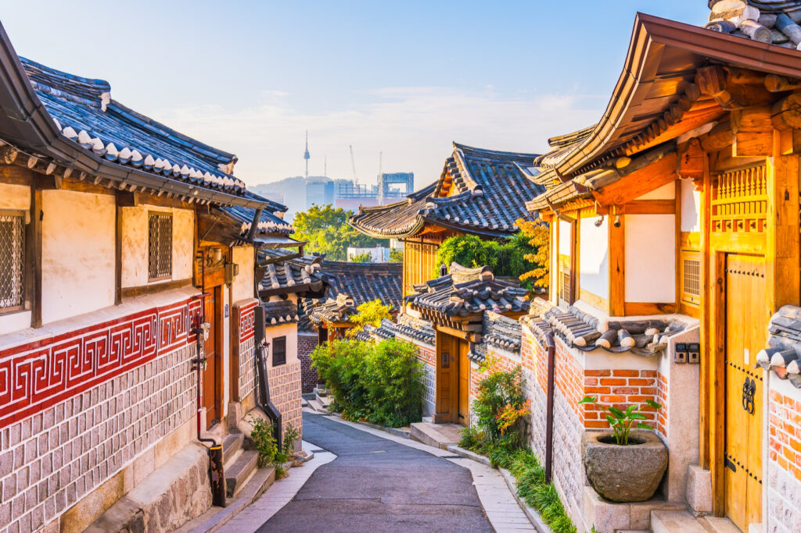
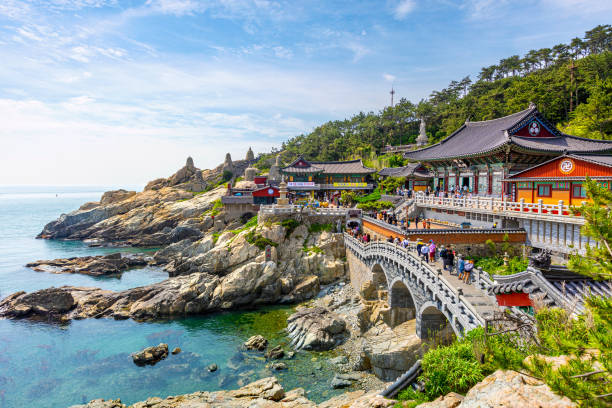
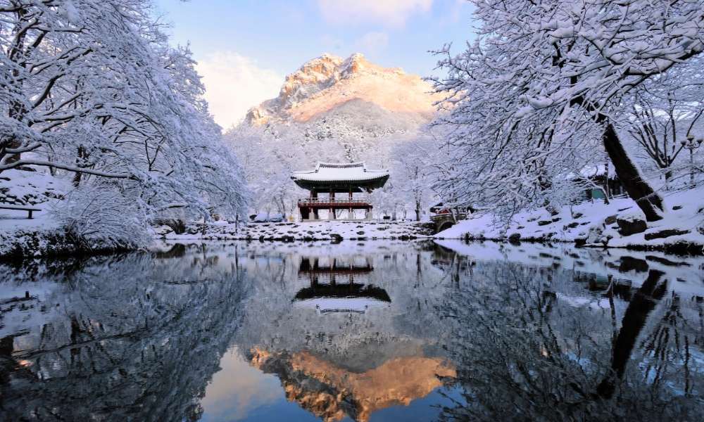
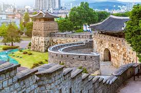
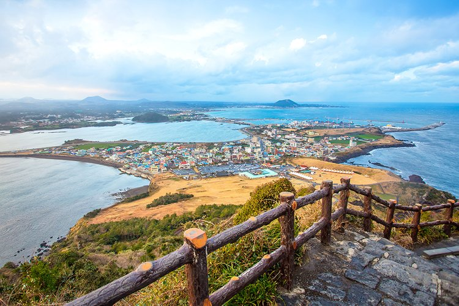

|  |
Seoul is a dynamic city where you will experience dazzling vibes of a modern rush. There are Buddhist temples, and the dramatic terrain defining nature at its best and making Seoul one of the top cities and the best South Korea attraction. With the excellence of architecture and the historical influence, Seoul is a city that offers a lifetime of experience. You can discover its pop culture or explores the fascinating wonders hidden in historical and cultural spots. Popular Attractions: Changdeokgung Palace, Gyeongbokgung Palace, The War Memorial of Korea, Yun Dong-Ju Literature Museum, Bukhansan National Park Things to Do: Discover the panoramic view from N Seoul Tower, Visit Bukchon Hanok village, A cultural experience at The NANTA Theater, Relish your taste buds with the best food |
|
Busan is rightly listed as the most beautiful place in South Korea, where beaches and mountains dominate the land. What's famous about Busan is the grand events like Busan international film festival that invites World Wide celebs, adding a glamorous touch to the city vibes. Busan is the second-largest city in South Korea that has something for everyone, whether it's Buddhist temples, or some cafes, market places, and other attractions that makes it one of the best places to visit in Asia.
Popular Attractions: Haedong Yonggungsa Temple, Yongdusan Park, Jagalchi Market, Gwangalli Beach, Beomeosa Temple, Taejongdae Park, Dongbaek Island Things to Do: Visit the beaches, Plan a tour to nearby villages, spend the evening at Gwangan Bridge, Songdo Cable Car ride |
 |
|  |
Adventure and fun, the best thing about Pyeongchang is its tranquility and thrilling beauty. Whether you are a hiker, or someone who is thrilled by every adventure, this is one of the best places to visit in South Korea for experiencing every scenic wonder. The City hosted the Winter Olympics in 2018, and even today you can indulge yourself with some snow fun during winters.
The snow-peaked mountains and the wild parks and the best attraction you can never miss in this city of South Korea.
Popular Attractions: Woljeongsa Temple, Odaesan National Park, Phoenix Snow Park, Daegwanryeong Yangtte Ranch Things to Do: Skiing, Photography, Visit the temples and Monasteries |
|
Suwon, the city in the Gyeonggi-do province, is a listed world heritage site and the best city if you plan a travel to South Korea. The city houses some of the magnificent attractions dating back to the 18th century, where you can explore the forts and museums. History has bestowed the city with an architectural beauty that makes it an interesting place to visit once in a lifetime. Suwon was about to be the capital of South Korea, but as soon as the king died, the power shifted to the governing city of Seoul. There are royal fortress and architecture from the past that adds an intriguing beauty to the city
Popular Attractions: Hwaseong Fortress, Baegun Lake, Suwon World Cup Stadium, Manseok Park, Gyeonggi Arts Center, Suwon First Church Things to Do: Visit the Paldalum Fort, Plan a tour of Suwon Hwaseong Museum, Explore the Korean Folk Village, Spend a day at Everland |
 |
|  |
The largest island in this scenic Asian Country, Jeju-do is best among the list of South Korea tourist spots. The countryside hotels, the lush beauty of the beaches, and the sprawling mountains have enhanced the captivating beauty of this island. Watch the serenity of the seashore painted in the colors of the dusk and the dawn or, be prepared for some thrilling activities.
This white sand beach in South Korea even houses rich biodiversity and a cultural tinge, making it a complete holiday destiny in itself. Moreover, Jeju-do Beach is listed as the new seven wonders of the world, justifying its surreal charm. Popular Attractions: Seongsan Sunrise Peak, Teddy Bear Museum, Halassang national park, Seonimgyo Bridge, Hyeopjae & Hamdeok beach, Cheonjiyeon Waterfalls Things to Do: Hiking and trekking the Hallasan Mountain, Visit the Manjang Cave, Plan a beach tour, Explore the Museums |